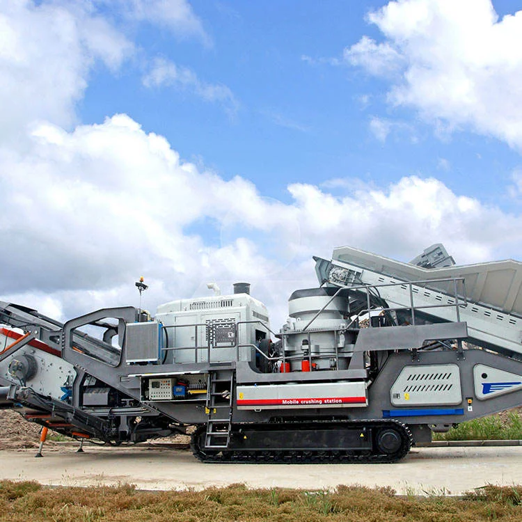
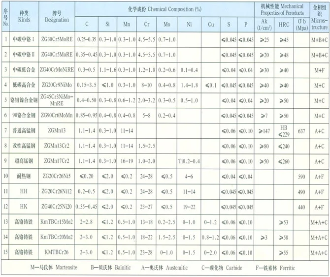

NP Impact Crushers
Typical Applications
Production Gallery — Anranst Workshop


.webp)

.webp)
.webp)

NP Impact Crushers — Models
| Models | Wear Parts |
|---|---|
| Models | NP13-NP22 |
| Wear Parts | Blow bars, Impact plates, Liner plates |
Wear Parts
Manufactured from premium wear-resistant alloys including high-manganese steel, Cr-Mo alloy steel, and high-chrome cast iron.
NP Impact Crushers Wear Parts
Models
NP13-NP22
Wear Parts
Blow bars, Impact plates, Liner plates
Blow Bar (Rotor Hammer)
High-speed impact element; accelerates feed material against impact plates; determines reduction ratio and product shape
| Grade | C | Si | Mn | Cr | Mo | Ni |
|---|---|---|---|---|---|---|
| Mn13Cr2 | 1.05-1.20 | ≤1.0 | 11.5-14.0 | 1.5-2.5 | — | — |
Excellent work-hardening capability; surface hardness increases under impact, ideal for moderate to high impact crushing conditions
| Grade | C | Si | Mn | Cr | Mo | Ni |
|---|---|---|---|---|---|---|
| Cr26 | 2.0-3.3 | ≤1.0 | 0.5-1.5 | 23.0-30.0 | 1.0-3.0 | ≤1.5 |
Excellent abrasion resistance with M7C3 carbide network; 3-5x longer life than Mn steel in pure abrasive wear; ideal for vertical mill rollers and VSI rotors
| Grade | C | Si | Mn | Cr | Mo | Ni |
|---|---|---|---|---|---|---|
| Cr-Mo Alloy Steel | 0.15-0.25 | 0.30-0.60 | 0.50-0.80 | 1.00-1.50 | 0.45-0.65 | — |
Good combination of hardness and toughness; ideal for SAG mill liners, grate bars and crusher frame liners under abrasive wear
| Grade | C | Si | Mn | Cr | Mo | Ni |
|---|---|---|---|---|---|---|
| Bimetal Cr26+Carbon Steel | 2.0-3.0 / 0.15-0.25 | ≤1.0 / 0.30-0.60 | 0.5-1.5 / 0.60-1.00 | 23.0-30.0 / ≤0.50 | 1.0-3.0 / — | ≤1.0 / — |
Dual-layer casting: Cr26 wear surface + ductile steel base; combines extreme abrasion resistance with structural integrity; 1.5-2x longer life than monolithic Cr26 for large hammers
Impact Plate / Breaker Plate
Absorbs impact of material thrown by blow bars; secondary crushing surface; adjustable gap controls product size
| Grade | C | Si | Mn | Cr | Mo | Ni |
|---|---|---|---|---|---|---|
| Mn18Cr2 | 1.05-1.35 | ≤1.0 | 16.0-19.0 | 1.5-2.5 | — | — |
Higher Mn content provides superior work-hardening depth; 20-30% longer service life than Mn13 in high-compression applications
Why Choose Anranst
- Bimetal Cr26+steel blow bars: wear layer HRC 62+ with ductile base for structural integrity; 50-80% longer life than monolithic Cr26
- Application-specific alloy selection: Mn13 for limestone, Cr26 for granite/basalt, Cr-Mo for recycling applications
- Precision rotor balancing ensures ±2g·cm for smooth operation at 500-800 RPM
- Full NP-series coverage: NP13, NP15, NP16, NP18, NP20, NP22